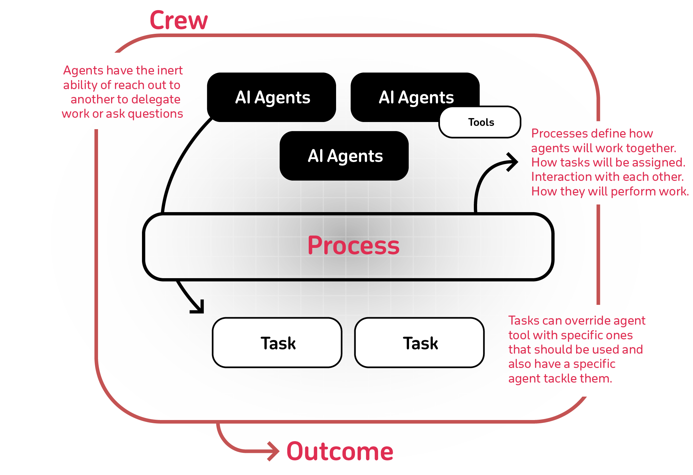

Welcome to crewAI Documentation
🤖 Cutting-edge framework for orchestrating role-playing, autonomous AI agents. By fostering collaborative intelligence, CrewAI empowers agents to work together seamlessly, tackling complex tasks.

Core Concepts
- Understanding Agents
- Creating Tasks
- Defining Tasks
- Managing Processes
- Collaboration and Delegation
- Agent Tools
How-To Guides
Examples and Tutorials
You can test different real life examples of AI crews in the examples repo
API Reference
- Agent API[WIP]
- Task API[WIP]
- Crew API[WIP]
- Process API[WIP]